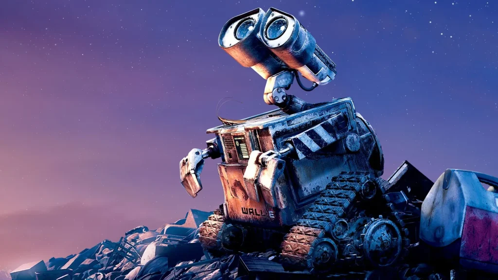

Overview
Pixar’s WALL – E is a thought – provoking work that explores the relationship among technology, humanity, and environmental responsibility. As a student of creative computing, this film has deeply touched me, offering profound insights into design, emotional storytelling, and the role of technology in addressing global challenges.

Emotional Design in Technology
The small and seemingly simple robot WALL·E embodies the power of emotional design. Despite having no language and limited facial features, WALL·E conveys a wide range of emotions, from curiosity to loneliness and then to love, through its expressive eyes, movements, and interactions. This is a perfect example of how design can humanise technology, making it accessible and endearing. It inspires me to think about how to design systems or interactive devices that can evoke an emotional connection with users. For instance, by adding subtle cues such as motion, sound, or visual feedback, non – human entities can be made to seem more alive.
WALL·E also comments on the duality of technology. On one hand, technology is the cause of the environmental destruction in the film. The Earth has become desolate and uninhabitable due to humans’ over – consumption and reliance on automated systems. On the other hand, WALL·E and another robot, EVE, represent that technology can be a force for revival and hope. This duality is closely related to the ethical challenges I explore in creative computing. It is crucial to design systems that are both environmentally responsible and socially beneficial. WALL·E’s journey reminds me that I must consider the broad impact of the technology I create. The key lies not only in what a system can do, but also in its long – term influence on the world.
Watching WALL·E has deepened my understanding of storytelling through design. By conveying complex themes with minimal dialogue, the film highlights the importance of intuitive and universal design. Moreover, it has made me reflect on the ethical responsibilities of technology creators regarding environmental issues. For my own projects, I hope to incorporate the principles of emotional design and ethical computing emphasised in WALL·E. Whether it’s an interactive installation or a software application, I aim to create experiences that forge human – centred connections with users while addressing meaningful issues.